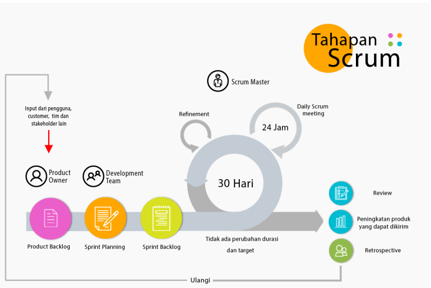

BAB II LANDASAN TEORI
1. Landasan Teori
1.1 Metode Scrum
Metode Scrum merupakan metodologi yang termasuk dalam agile software development. Scrum dinilai dapat menghasilkan kualitas perangkat lunak yang baik sesuai dengan keinginan pengguna, dapat digunakan dalam proyek besar maupun kecil, dan mudah untuk mengadopsi perubahan. Menurut schwaber & sutherland scrum adalah sebuah kerangka kerja yang dapat mengatasi suatu masalah komplek yang selalu berubah, dan juga dinilai dapat memberikan kualitas produk yang baik sesuai dengan keinginan pengguna secara kreatif dan produktif.
1.2 Tahapan Metode Scrum

- User Story
Adalah deskripsi secara rinci tentang kebutuhan sistem dalam bentuk bahasa yang dapat dengan mudah dipahami oleh sudut padang end user. User story digunakan sebagai acuan untuk membuat product backlog.
- Product Backlog
Adalah daftar urutan segala sesuatu yang dibutuhkan dalam sistem maupun produk. Isi dari Product Backlog berisi fitur yang akan diterapkan ke dalam sistem beserta estimasi waktu pengerjaannya. Dokumen ini selalu berubah-ubah secara berkala seiring dengan perkembangan produk agar menghasilkan produk yang layak. Product Owner merupakan satu-satunya yang bertanggung jawab pengelolaan Product Backlog.
- Sprint
Adalah suatu siklus waktu dengan durasi maksimal satu bulan atau kurang. Durasi pada sprint sepanjang pengembangan produk tidak berubah. Tujuan sprint adalah untuk menyelesaikan sesuatu (Sprint Goal).
- Sprint Backlog
Adalah kumpulan dari item Product Backlog yang diidentifikasi oleh tim scrum. Daftar ini dikerjakan selama sprint berlangsung. Tim memilih beberapa item product backlog dan mengidentifikasi tugas-tugas yang perlu untuk diselesaikan berdasarkan user story yang ada.
- Daily Scrum
Adalah aktivitas harian di dalam sprint yang dilakukan scrum team untuk memeriksa apa yang telah dikerjakan, apa yang akan dikerjakan dan apa yang mungkin menjadi hambatan dalam pengerjaan proyek. Scrum team menggunakan daily scrum sebagai sarana untuk memperbaiki perkembangan produk agar tercapainya sebuah Sprint Goal.
1.3 Sistem
Sistem yaitu sekumpulan jaringan atau elemen yang saling berhubungan
dan bekerja sama dalam memproses inputan yang ditunjukan kepada sistem untuk melakukan suatu
kegiatan atau menyelesaikan suatu sasaran tertentu dan mengolah inputan hingga menghasilkan
keluaran yang diinginkan.
1.4 Informasi
Informasi dapat diartikan sebagai suatu kumpulan dari beberapa data yang didapatkan berdasarkan
fakta dan kemudian diolah menjadi informasi yang lebih beguna serta lebih berarti bagi yang
siapa pun yang menerima informasi tersebut.
1.5 Sistem Informasi
Sistem Informasi adalah kumpulan dari komponen sistem yang saling bekerjasama antara satu sama
lain dan untuk mencapai suatu tujuan yaitu mengolah data menggunakan perangkat keras dan
perangkat lunak agar menghasilkan informasi yang bermanfaat dalam pengambilan keputusan.
1.6 Penyewaan
Penyewaan diartikan sebagai pemakaian sesuatu barang atau pun jasa dengan cara membayar
uang sewa terebih dahulu. Dalam pengertian lainnya penyewaan adalah proses menyewakan.
Yang dimaksud dengan sewa adalah meminjamkan suatu barang atau jasa, namun harus dibayar
terlebih dahulu sebelum bisa digunakan. sesuai dengan kontrak perjanjian yang tertera pada
peraturan penyedia jasa penyewaan yang ada.
1.7 Website
Website merupakan sebuah media atau halaman informasi yang disediakan khusus untuk
pengguna internet sehingga bisa diakses dimana pun dan kapan pun selama terkoneksi
dengan jaringan internet. Webiste juga merupakan komponen atau kumpulan komponen yang
di dalamnya terdapat teks, gambar, suara, animasi, sehingga menjadi media informasi
yang sangat menarik untuk dikunjungi.